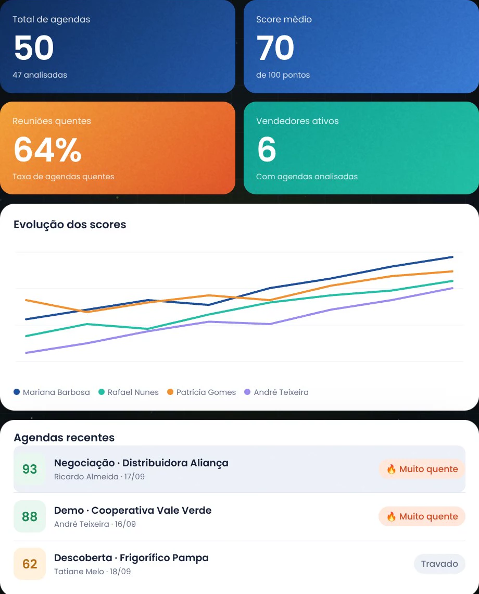
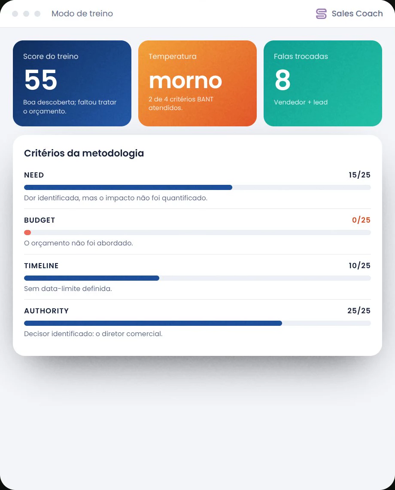
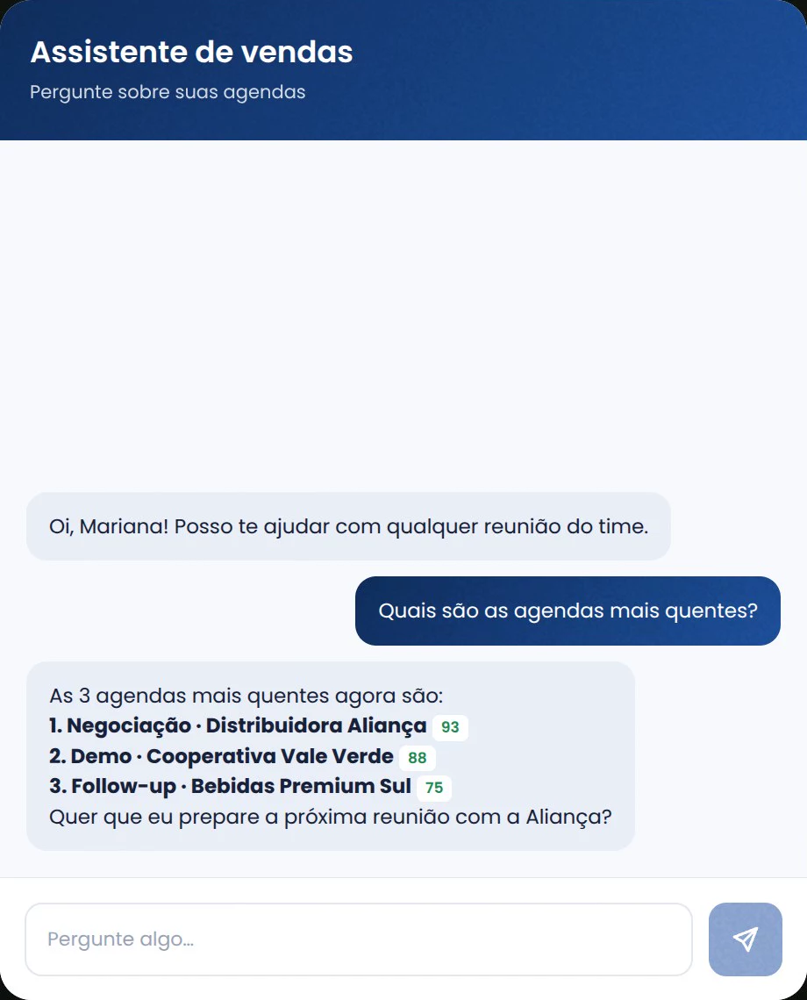
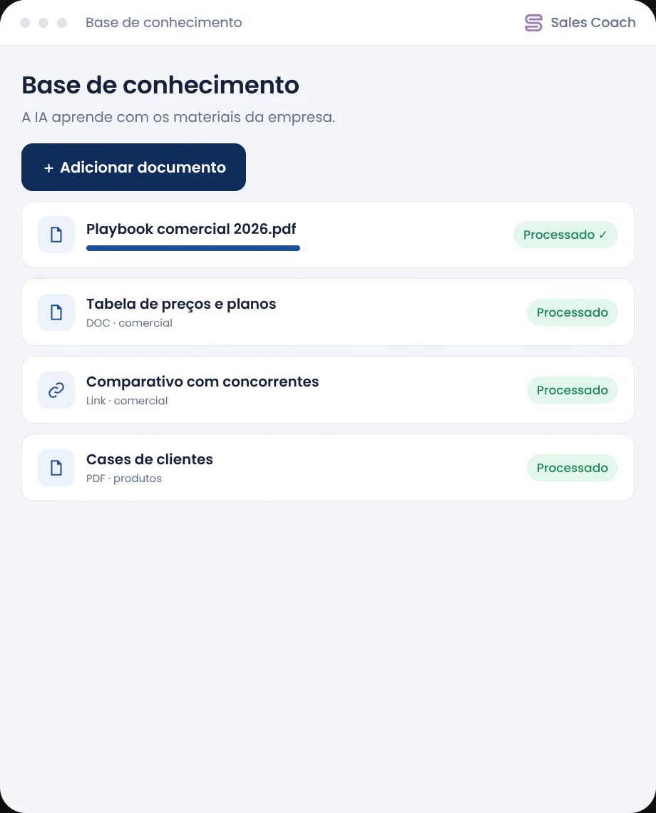

Sales Coach · um produto NEXA
Sales Coach · um produto NEXACada reunião
vira método.
O gestor não ouve todas as reuniões. O Sales Coach ouve: treina antes, orienta durante e analisa depois, em português, no Meet e no Teams, pela metodologia da sua empresa.




Quatro momentos. A mesma régua.
Antes, durante e depois de cada reunião, e sempre que alguém precisar perguntar. A mesma metodologia nos quatro, para o time inteiro vender igual.
Erre no simulado, não no lead de verdade.
A IA faz o papel do cliente com as objeções que já apareceram nas suas reuniões. Você fala pelo microfone, e a conversa termina com nota.
- Clientes simulados, com nível de dificuldade
- Treino por voz, como numa chamada
- Nota e critérios da metodologia ao final
A resposta chega com a objeção ainda no ar.
A extensão acompanha a reunião no Meet e no Teams. Discreta: só o vendedor vê. Quando o lead trava, a dica "fale agora" aparece na hora.
- Transcrição em tempo real
- Dicas por objeção e por critério que falta cobrir
- Gravando tela e áudio, sem bot na sala
Cada reunião vira nota, com justificativa.
Score de 0 a 100, temperatura da oportunidade, talk ratio e cada critério justificado com o que foi dito. Os próximos passos vão para o CRM.
- BANT, MEDDIC e SPIN prontos
- Ou a metodologia da sua empresa
- Envio ao CRM sem ninguém digitar
Pergunte como a um colega.
O assistente consulta as reuniões de verdade antes de responder e cita cada uma pelo nome. Quais agendas estão quentes? O que travou a negociação?
- Respostas com base nas reuniões do time
- Cita a agenda, a data e quem conduziu
- Prepara a próxima conversa

O time inteiro numa tela.
Indicadores do time, evolução dos scores por vendedor e as agendas quentes ou travadas. O um a um deixa de ser opinião.
- Score médio e reuniões quentes
- Evolução por executivo
- Relatórios de gestão compartilháveis
Tudo o que sobra de uma reunião.
Treino por voz
Simulações com clientes de IA que usam as objeções reais do seu mercado.
Coach ao vivo
Extensão para Meet e Teams com dicas na hora certa. Só o vendedor vê.
Análise com nota
Score, temperatura, talk ratio e critérios justificados com o que foi dito.
Metodologia própria
BANT, MEDDIC e SPIN prontos, ou critérios, pesos e faixas da sua empresa.
Assistente de vendas
Pergunte sobre as agendas e receba respostas com as reuniões citadas.
Painel do gestor
O time inteiro numa tela: evolução, agendas quentes e travadas.
Base de conhecimento
Playbooks, preços e cases viram contexto para a IA e geram argumentos.

CRM preenchido sozinho
Resumo, próximos passos, temperatura e critérios vão para a oportunidade.
Relatórios compartilháveis
Relatórios de gestão com link e validade, para levar à diretoria.
Quem vende e quem lidera.
Antes da primeira reunião de verdade, com as objeções que o seu mercado faz.
Quando a objeção aparece, a dica já está na tela, sem sair da conversa.
Ao fim de cada reunião, o que foi bem e o que fazer diferente na próxima.
O novato chega à primeira reunião já tendo visto as objeções do seu mercado.
Sem precisar estar em todas: cada conversa do time é ouvida e avaliada.
Critérios, notas e trechos da conversa sustentam o feedback.
Encaixa no que o time já usa.
Meet e Teams pela extensão. Zoom e gravações de qualquer origem por upload. O resultado vai para HubSpot, Salesforce, Pipedrive e RD Station, e também Zoho, Bitrix24, Kommo, monday, Agendor, Ploomes, Slack, Gmail, WhatsApp e Notion.
Você paga por quem usa.
Cobrança por usuário ativo. Nada de plano travado nem de licença paga para quem não usa. O time cresce, o preço acompanha.
Essencial
- 50 reuniões analisadas por usuário/mês
- Coach ao vivo durante a reunião
- Extensão para Meet e Teams
- BANT, MEDDIC e SPIN prontos
- Base de conhecimento e gerador de argumentos
Profissional
- 120 reuniões analisadas por usuário/mês
- Metodologia própria: critérios, pesos e faixas
- CRM preenchido sozinho ao fim da reunião
- Modo de treino e assistente de vendas
- Relatórios de gestão compartilháveis
Enterprise
- Volume de análises sob medida
- Integrações dedicadas e acesso à API
- Onboarding da metodologia e da base
- SSO e revisão de segurança
- SLA e suporte dedicado